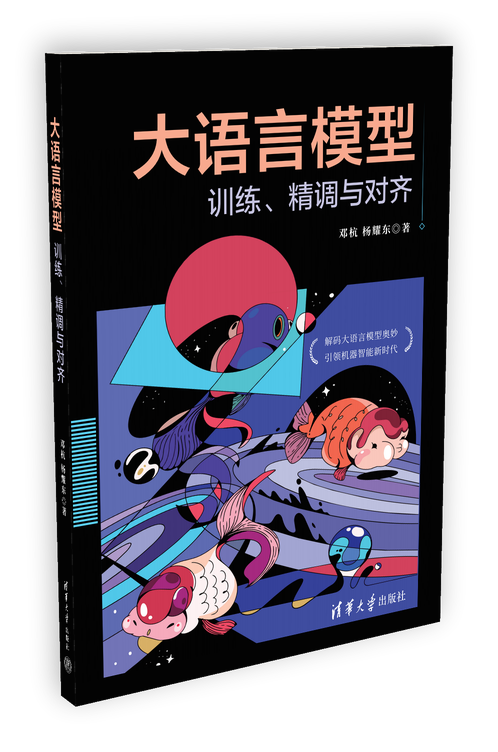

杨耀东
长期从事强化学习与对齐研究，代表性成果包括 PKU-Beaver、BeaverTails、Safe RLHF、Aligner 与 OmniSafe。大模型对齐综述提出 RICE 原则；论文《Language Models Resist Alignment》获 ACL 2025 最佳论文奖。自 2022 年起位列 CSRankings 北京大学 AI/ML 方向学者首位。
在北京大学开设首门系统讲授大语言模型的课程《大语言模型基础与对齐》，获北京大学教学成果奖二等奖。
结合北京大学首门系统讲授大语言模型的课程讲义，用一套完整的体系把公式、伪代码与可运行代码串成同一条路径。

横向是学习的先后：预训练、微调、对齐；纵向是每本书都要交代的三件事——能力靠什么信号学出来，接到哪套结构与目标上，又如何在硬件上跑得动。
多数教材讲一个算法，止步于“它是什么、有什么好处”。本书从问题动机出发，落到定义，再把“为什么非要这样写”推成可验算的式子，最后给出实现上的取舍。下面三个例子取自不同章节，走的是同一条路：问题动机 → 定义出发 → 算法推导 → 实现技巧。点击标题展开。
六页样张取自书稿，覆盖公式推导、算法框、表格、代码与图示。点击任意一页可放大查看。
与教材章节一一对应，16:9 PDF，无动画，离线可用。可以先翻图片预览，也可以直接在页内翻整本 PDF。
纸质版由清华大学出版社出版，京东、淘宝 / 天猫与当当同步销售。扫码或点“前往购买”直达商品页。